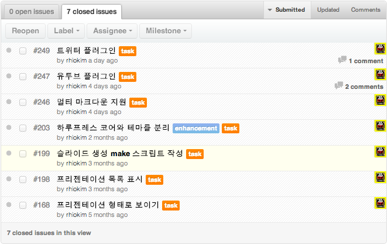

About Author

Rhio Kim
blog: http://rhio.tistory.com
twitter: @rhiokim
github: rhiokim
자바스크립트를 좋아하는 인간입니다.
- Arduino
- Node.js
- HCI
About this Article
Date Released:
Tuesday, October 16 2012 2:00 AM하루프레스 v0.9.0 회고
릴리즈 노트는 개인적인 회고를 위해 작성되는 포스팅입니다.
이번 버젼도 생각보다 오래 걸렸습니다. 하지만 마지막 몇일 동안 급작스러운 아이디어와 삘로 인해 플러그인 구조와 펜스 코드블럭 및 멀티 마크다운을 일부 구현하였습니다.
사실 요즘 회사 프로젝트와 컨퍼런스 준비로 인해 하루프레스 개발에 투입할 시간이 너무 없었는데 주말에 시간을 할애 해 준 평생 애인에게 너무 고마워요.
이슈리스트

이미 블로그 포스팅을 통해 변경 사항에 대해 소개하였습니다.
좋았던 점
- 다양한 오픈 소스의 이슈 트래커, Pull Request 를 유심히 살펴 보는 것도 좋은 아이디어를 얻을 수 있습니다.
- 플러그인 지원을 위해 야머 Ajax 그룹에서 의견을 주어서 플러그인 태그를 정하는데 큰 도움이 되었습니다.
- 많은 분들이 공식 런칭에 반응을 해주셔서 좋았습니다.
- github fork : 11
- github watch : 24
- @haroopress follow : 17
- 페이스북 like : 84
- 구글 통계 : 신규 방문자 일간 100명
안좋았던 점
- 계획에 없던 윈도우 지원을 계획하여 Make 를 Jake 로 전환하는 테스트로 많은 시간을 소비하였습니다.
시작
이번 버젼부터 SNS 와 커뮤니티를 통해 홍보를 시작하였습니다. 아직 많이 부족하지만 남아 있는 아이디어와 Markdown 과 HTML5 그리고 Node.js 의 비젼을 알기에 당분간 지속적으로 하루프레스를 발전시킬 예정입니다.
좋은 아이디어나 오류, 버그들은 이슈트래커 를 통해 피드백 부탁드립니다.